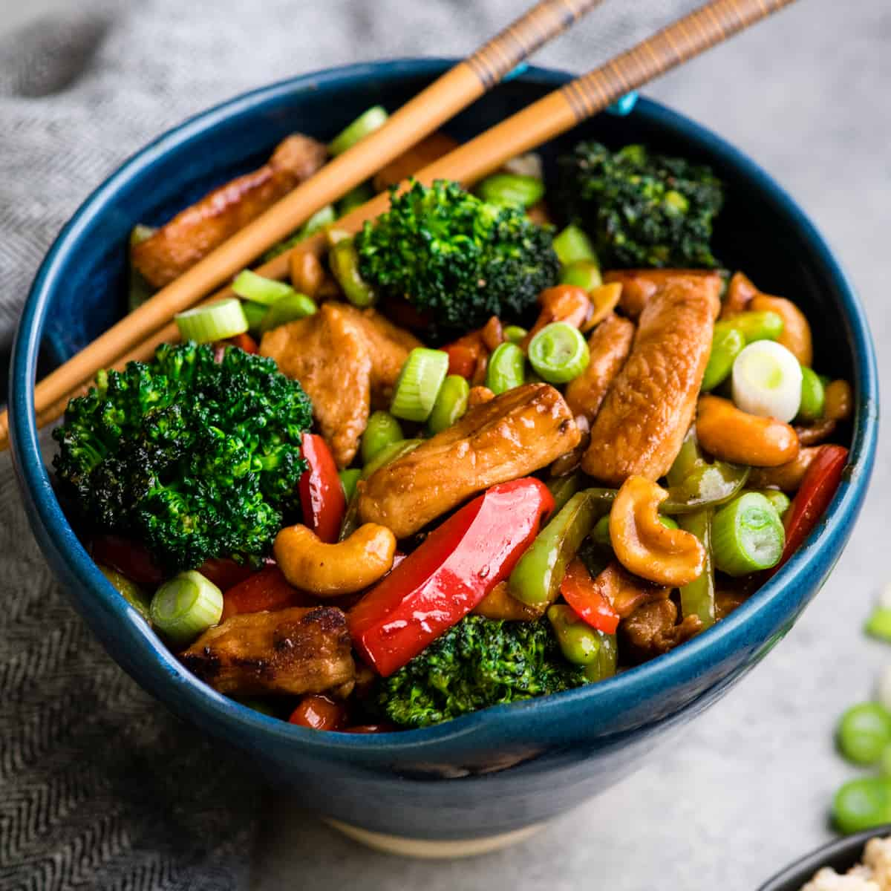

Cashew Chicken Stir Fry

A basic but delicious stir fry!
It's probably even reasonably healthy.
...Depending on how much honey you add...
Ingredients
- 3 tbsp cornstarch
- 0.5 tsp salt
- 0.5 tsp pepper
- 1.25 lb of boneless, skinless chicken breasts, diced into 1-inch pieces
- 2 tbsp seasame oil
- 1 tblsn olive oil
- 2 cups broccoli florets
- 1 cup red bell peppers, diced
- 1 cup shelled, frozen edamame
- 1 cup unsalted, dry-roasted whole cashews
- 3 tbsp soy sauce
- 2 tbpn honey, or to taste
- 1 tbsp rice wine vinegar
- 1 tbpn chili garlic sauce
- 3/4 tsp ground ginger
- 1 cup green onions, sliced into thin rounds
Directions
- Add cornstarch, chicken, salt peper to ziplog back, and shake
- To a medium bowl add the soy sauce, honey, rice wine vinegar, chili-garlic sauce, and ginger. Whisk to combine
- To large skillet add the oils and chicken. Cook for ~5 minutes over medium high heat until 90% cooked through
- Add the broccoli, peppers, edemame, and garlic. Stir to combine. Cook until veggies are crisp and chicken is cooked through
- Add cashews to the skillet and combine
- Ad the sauce and stir to combine. Allow sauce to simmer over medium low heat for 1-2 minutes.
- Add the green onions, stir to combine and serve over rice!